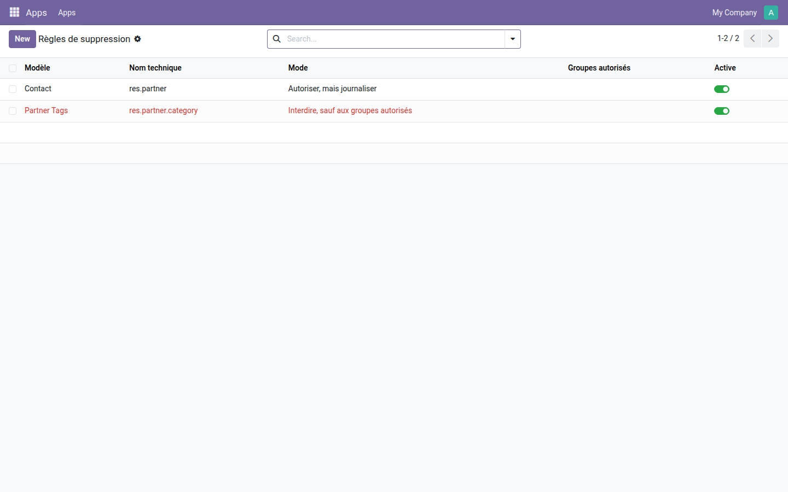
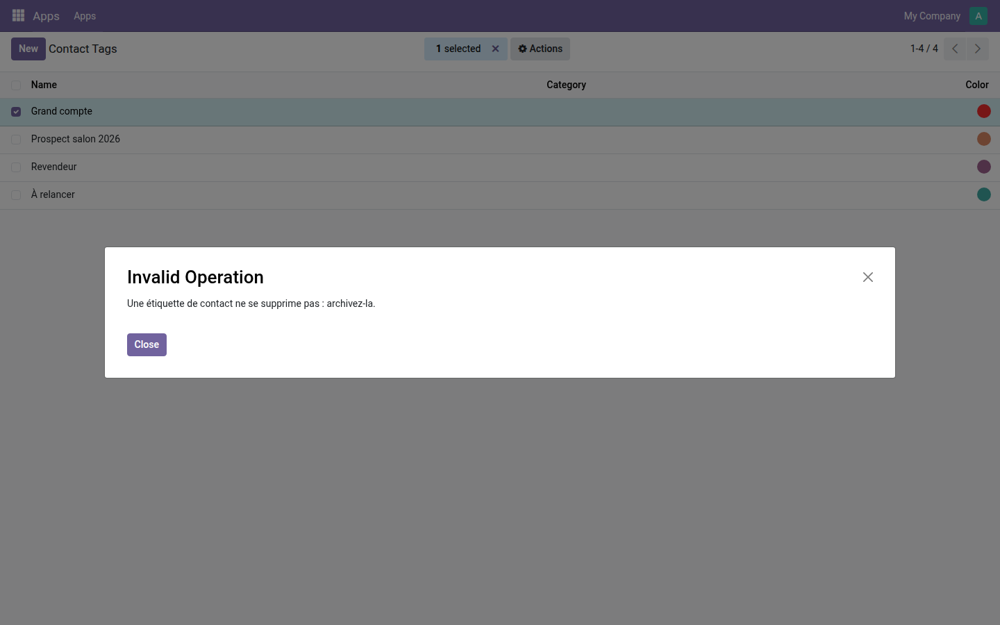
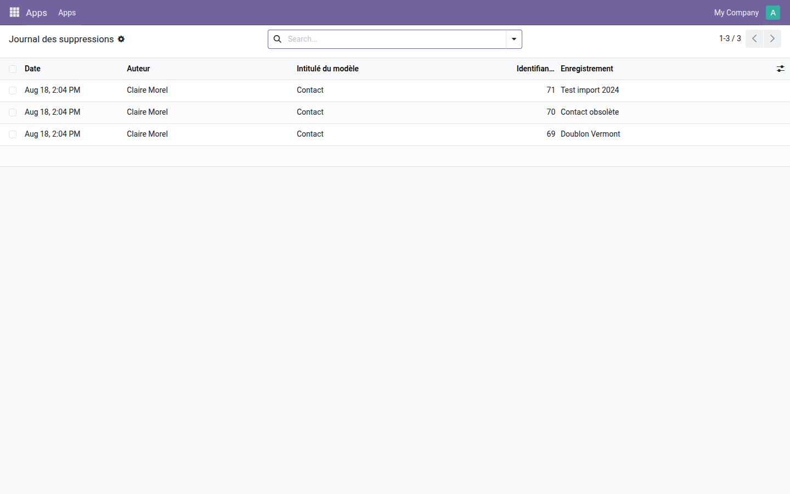

Interdisez la suppression modèle par modèle, réservez-la à quelques groupes, et gardez la trace de chaque effacement.
Une suppression ne laisse rien derrière elle : l'enregistrement disparaît, et son chatter avec lui. Odoo ne propose qu'un droit global par modèle, accordé ou refusé une fois pour toutes dans les droits d'accès — sans exception possible, sans message d'explication, et sans le moindre registre de ce qui a été effacé.
Les contacts restent supprimables, mais chaque effacement est inscrit ; les étiquettes de contact, elles, sont fermées à tout le monde.

Un administrateur tente de supprimer une étiquette : la suppression est arrêtée et le message est celui qui a été écrit dans la règle. Le garde-fou ne fait pas d'exception pour l'administrateur.

Trois contacts effacés, avec leur identifiant et leur nom au moment de la suppression — les deux seules informations qu'on ne peut plus retrouver après coup.

Pour aller au-delà de la suppression et cloisonner ce que chacun voit, la gamme OdooSkills compte une quinzaine de modules de cloisonnement — par équipe commerciale, par département, par projet, par journal comptable, par entrepôt. Catalogue complet : apps.odooskills.com.
Licence LGPL-3 — compatible Odoo 19.0 Community et Enterprise. Support : support@odooskills.com.